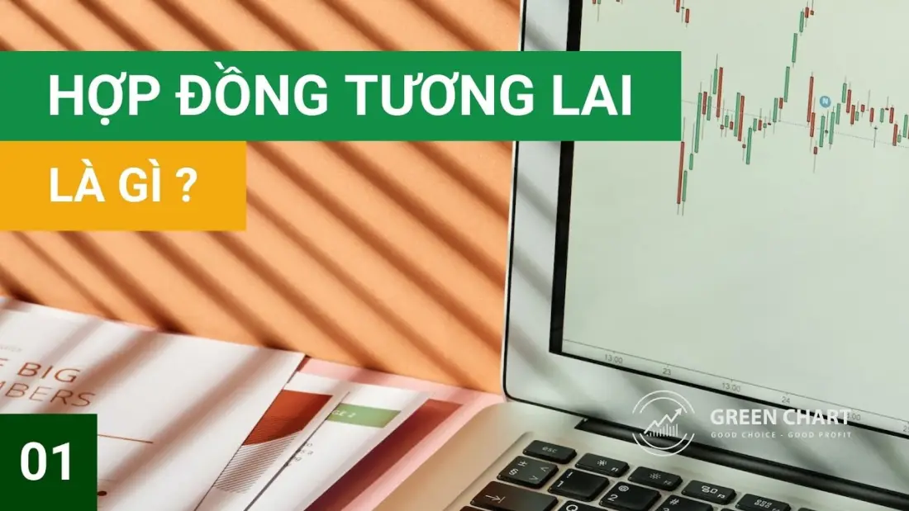
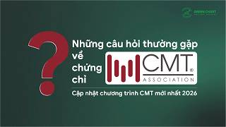
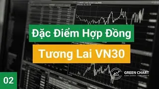

Video bài giảngApple: như Apple TV: mỗi playlist một hàng lướt ngang, video mở đầu to nhất. Trang thật xếp trình phát và danh sách dọc. Hiệu ứng: #389 5 dải ảnh video: rê chuột vào dải nào thì dải đó mở rộng, tên dựng thẳng, nút "Xem" nổi lên; bấm để mở YouTube#282 ảnh video nổi bật mở ra từ khe giữa khi cuộn tới#339 kéo dải video bằng chuột, thả ra trượt theo đà và khớp thẻ#226#216#237Thẻ nghiêng, ảnh phóng nhẹ khi rê chuột
Videobài giảng.
Các playlist bài giảng miễn phí của Green Chart về chứng khoán phái sinh và tự học chứng khoán từ A–Z.

Bài 1: Hợp Đồng Tương Lai Là Gì? I Green Chart10:05Xem trên YouTubeLỚP HỌC THỬ - KHÓA HỌC STOCK TRADING FOR A LIVING1:04:50Xem trên YouTubeLỚP HỌC THỬ CMT FOR COMMUNITY (KÌ THI CMT LEVEL 1 - THÁNG 12/2025)47:24Xem trên YouTubeKINH NGHIỆM HỌC VÀ THI CHỨNG CHỈ CMT (UPDATE 2025)11:26Xem trên YouTube
NHỮNG CÂU HỎI THƯỜNG GẶP VỀ CMT - CẬP NHẬT CHƯƠNG TRÌNH CMT MỚI NHẤT 202617:43Xem trên YouTubeXem 10:05
Playlist · 6 video
Playlist về Chứng Khoán Phái Sinh Từ A - Z
Bắt đầu với Bài 1: Hợp Đồng Tương Lai Là Gì? I Green Chart.
Playlist về Chứng Khoán Phái Sinh Từ A - Z

Bài 2: Những Đặc Điểm Của Hợp Đồng Tương Lai VN30 I Green Chart15:07Bài 3: Hướng Dẫn Giao Dịch Hợp Đồng Tương Lai VN30 I Green Chart11:11Bài 4: Hướng Dẫn Phân Tích Số Liệu Chứng Khoán Phái Sinh8:54Bài 5:Hướng Dẫn Hedging Danh Mục Cổ Phiếu Với Hợp Đồng Tương Lai VN308:00Bài 6: Hướng dẫn giao dịch chứng quyền có đảm bảo (Covered Warrant)12:47Xem 1:04:50
Playlist · 9 video
Playlist về học chứng khoán từ A-Z
Bắt đầu với LỚP HỌC THỬ - KHÓA HỌC STOCK TRADING FOR A LIVING.
Playlist về học chứng khoán từ A-Z
Bài 1: Cổ Phiếu Là Gì? I Green Chart9:56 Bài 2: Những Đặc Điểm Của Hợp Đồng Tương Lai VN30 I Green Chart15:07Bài 3: Cổ Tức Là Gì ? I GreenChart10:28Bài 4: Những Đặc Điểm Của Giao Dịch Cổ Phiếu (Quan Trọng)15:15Bài 5: Phân Tích Cơ Bản Và Phân Tích Kỹ Thuật Là Gì?8:49Bài 6: Các Nguồn Tra Cứu Thông Tin Về Cổ Phiếu (Quan Trọng Cần Biết) I Green Chart17:57Bài 7: Hướng Dẫn Đọc Bảng Giá Và Biểu Đồ Chứng Khoán I Green Chart15:46
Bài 2: Những Đặc Điểm Của Hợp Đồng Tương Lai VN30 I Green Chart15:07Bài 3: Cổ Tức Là Gì ? I GreenChart10:28Bài 4: Những Đặc Điểm Của Giao Dịch Cổ Phiếu (Quan Trọng)15:15Bài 5: Phân Tích Cơ Bản Và Phân Tích Kỹ Thuật Là Gì?8:49Bài 6: Các Nguồn Tra Cứu Thông Tin Về Cổ Phiếu (Quan Trọng Cần Biết) I Green Chart17:57Bài 7: Hướng Dẫn Đọc Bảng Giá Và Biểu Đồ Chứng Khoán I Green Chart15:46 Bài 8: Hướng Dẫn Đọc Và Phân Tích Báo Cáo Tài Chính (Phần 1) I GreenChart43:17
Bài 8: Hướng Dẫn Đọc Và Phân Tích Báo Cáo Tài Chính (Phần 1) I GreenChart43:17
Bài 2: Những Đặc Điểm Của Hợp Đồng Tương Lai VN30 I Green Chart15:07Bài 3: Cổ Tức Là Gì ? I GreenChart10:28Bài 4: Những Đặc Điểm Của Giao Dịch Cổ Phiếu (Quan Trọng)15:15Bài 5: Phân Tích Cơ Bản Và Phân Tích Kỹ Thuật Là Gì?8:49Bài 6: Các Nguồn Tra Cứu Thông Tin Về Cổ Phiếu (Quan Trọng Cần Biết) I Green Chart17:57Bài 7: Hướng Dẫn Đọc Bảng Giá Và Biểu Đồ Chứng Khoán I Green Chart15:46Bài 8: Hướng Dẫn Đọc Và Phân Tích Báo Cáo Tài Chính (Phần 1) I GreenChart43:17Đăng ký tư vấn
Bắt đầu lộ trình CMT của bạn.
Green Chart liên hệ tư vấn lộ trình và lịch khai giảng phù hợp trong 24 giờ.
- Đơn vị đầu tiên và duy nhất tại Việt Nam luyện thi đủ 3 level CMT
- Học online qua Google Meet, phù hợp người đi làm
- Học lại miễn phí theo chính sách của từng khoá